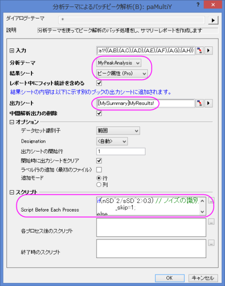
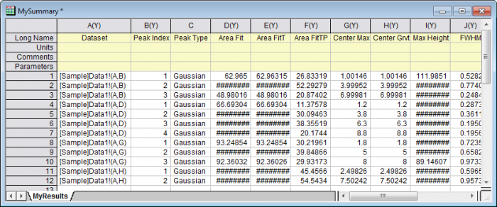

各工程の前にスクリプトを使用したテーマによるバッチピーク解析
BatchPA-Script-Before
概要
Originは 解析テーマ を使用した、複数のデータセットのバッチピーク解析を行うことが出来ます。それぞれの処理の前にスクリプトを実行することで実際にデータを入力する前に、ピークデータの前処理をすることができます。（例：不要なデータセットの除外）テーマを使用したバッチピーク解析はOriginProのみの機能ではありませんが、このチュートリアルではピークアナライザのピークフィットを使ってテーマを作成することを目標にしています。ピークフィットはOriginPro専用機能であることに注意してください。
必要なOriginのバージョン: 2016 SR0以降
学習する項目
このチュートリアルでは、以下の項目について解説します。
- バッチピーク解析のためのテーマとして、解析の設定を保存する。
- データの前処理をそれぞれ行う前に、スクリプトを記述する。
- 解析テーマを使ったバッチピーク解析
ステップ
テーマとして解析の設定を保存
このチュートリアルは、チュートリアルデータプロジェクト（<Origin EXE フォルダ>\Samples\TutorialData.opj）と関連しています。
- Tutorial Data.opj を開き、プロジェクトエクスプローラー (PE)に表示されているScript Before Process in Batch PA フォルダを開きます。
- ワークブックにあるData1 ワークシートをクリックします。B列を選択し、解析：ピークと基線：ピークアナライザー をクリックします。最後にピークフィット(Pro)を選択します。
- 進むのボタンをクリックし、基線モードを無し(Y=0)に設定します。進むボタンを2回クリックし、ピークフィット(Pro) のページに移動します。結果 の下にあるグラフ構成の設定 を開き、サマリーグラフの作成で<なし>をt選択し、解析処理をスピードアップするために、レポートグラフの作成を行わない設定にします。
- ダイアログテーマの隣にある
 ボタンをクリックして、名前を付けて保存...を選択し、名前を付けてテーマを保存のダイアログを開きます。テーマ名の編集ボックスで、MyPeakAnalysis を入力し、OK ボタンをクリックして保存します。
ボタンをクリックして、名前を付けて保存...を選択し、名前を付けてテーマを保存のダイアログを開きます。テーマ名の編集ボックスで、MyPeakAnalysis を入力し、OK ボタンをクリックして保存します。
- 完了ボタンをクリックし、解析を実行して結果を出力します。
ピークデータの前処理するためのスクリプトを準備
テーマを使ったバッチピーク解析 ダイアログには、各プロセス前及び各プロセス後、終了時にスクリプトを実行できるように、3つの編集ボックスが作られています。このセクションでは、ピークデータを前処理するために、各プロセスの前にスクリプトを記述する方法を主に説明します。
- ワークシートData1を再度アクティブにします。各データセットのスパークラインから、いくつかのピークデータ、例えばC列、E列、F列に多くのノイズがあることが分かります。ノイズが特定のレベルに達している場合、このようなノイズを除去します。
- このチュートリアルでどのデータにノイズがあるかを識別する方法は以下の手順に従って行っています。（スパークラインラベル行が見えない場合にはワークシート内の右側にある灰色の領域を右クリックして表示：スパークラインで表示してください）
- データから高い周波数のノイズを取得するための、ハイパスFFTフィルタで生データにフィルタをかけます。
- ノイズと対応する生データの標準偏差(SD)を確認します。
- 生データのSDの二乗以上のノイズのSDの二乗の割合が30％を超える基準を設定します。それはノイズデータと考えられ、バッチ解析から除外されます。
- 上記のルーチンに従った、ノイズデータを事前に除外するスクリプトは次の通りです。
dataset dr;
fft_filters iy:=_ry filter:=high oy:=dr; // Perform high-pass fft filter to obtain noise
stats dr;
double nSD = stats.sd; // Calculate SD of noise
stats _ry;
double sSD = stats.sd; // Calculate SD of raw data
if(nSD^2/sSD^2>0.3) // Set noise identification criteria
_skip=1;
else
_skip=0;
_ry は、現状のy データを参照し、 _skip は現状のデータセットをスキップするかどうかを決定します。
解析テーマを使ったデータセットのバッチ解析
- ワークシート Data1をアクティブにし、シート中の全ての列を選択して、解析：ピークと基線：：分析テーマを使ったバッチピーク解析 を選択して、ダイアログを開きます。
- 分析テーマのドロップダウンリストから MyPeakAnalysis を選択し、結果シートのドロップダウンリストから、ピーク属性(Pro) を選択します。
- 特定のシートに結果を出力するには、出力シートの編集ボックスに、範囲をシンタックスで入力します。MySummary ブックのMyResults ワークシートに出力するには、[MySummary]MyResults! と編集ボックスに入力します。
- 上記セクションで記述したスクリプトをスクリプトノード内にある各プロセス前のスクリプトに入力します。（ヒント：テキストボックス右側にあるボタンをクリックするとスクリプトを貼り付けて編集できる編集ボックスが開きます）

- OKをクリックしてバッチピーク解析を実行すると、ノイズの多いデータセットは、除外されてMyResultシートに表示されます。
